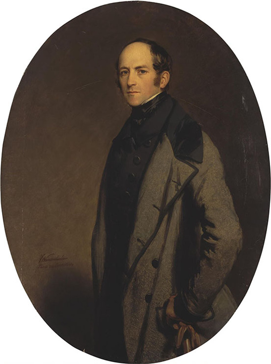
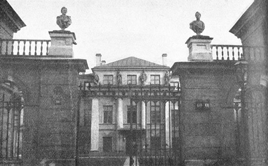

Count Aleksei Alekseevich Bobrinskii, who owned the mansion on Galernaia Street in which the Whistler family lived from September 1843 to May 1844

Franz Xaver Winterhalter (1806–1873). Portrait of Count Alexei Bobrinsky. 1844. Oil on canvas. 123 x 93 cm. State Hermitage Museum, St. Petersburg (GE-9621).
Image 87
Count Aleksei Alekseevich Bobrinskii’s father, Aleksei Grigorievich Bobrinskii, son of Catherine the Great and Prince Grigorii Grigorievich Orlov
The front gates of the Bobrinskii Mansion on Galernaia Street, in which the Whistler family lived from September 1843 to May 1844

The photographs in Images88 through 92 were all taken by G.K. Lukomskii c. 1917 and published in G.K. Lukomskii, Staryi Peterburg Progulki po starinnym kvartalam [Old Petersburg: Walks through the Old Quarters] [Petrograd: Svobodnoe iskusstvo, 1917] as well as in subsequent editions. [full resolution image]